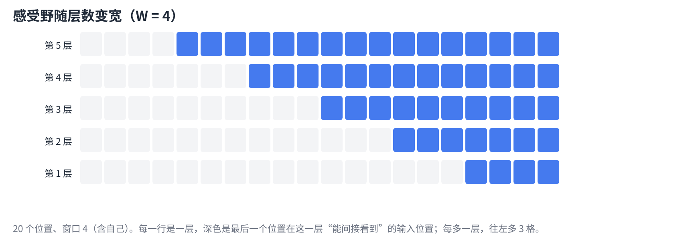
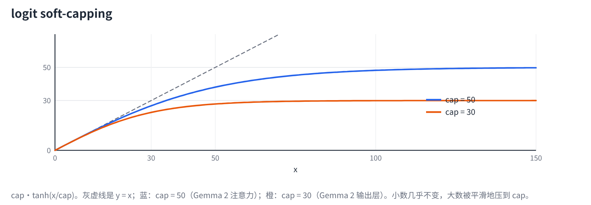
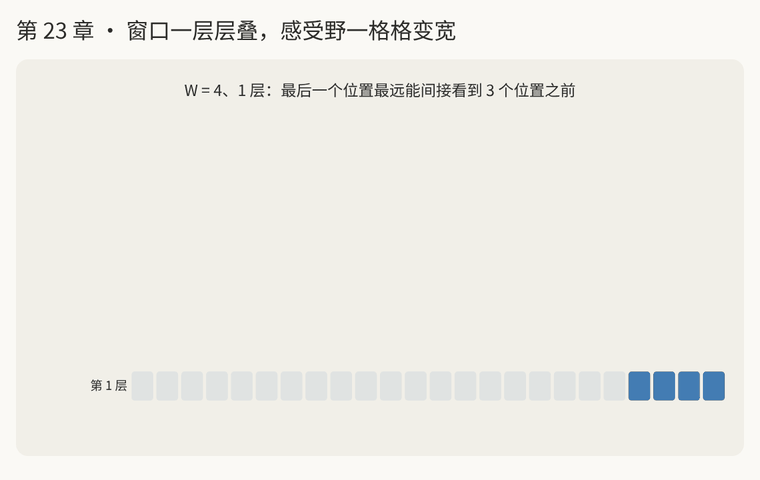

第 23 章 · 滑动窗口：每层只看前 W 个词，叠起来为什么能看得很远
本地运行
git clone https://github.com/wikieden/beyond-transformer
cd beyond-transformer/code/notebooks
pip install jupyterlab torch numpy
jupyter lab ch23_sliding_window.ipynb也可以下载后直接用 VS Code 打开 .ipynb 运行。需要 GPU 的章节在 Colab 里选「代码执行程序 → 更改运行时类型 → GPU」。
本章回答：全注意力每个词要看前面所有词，计算和 KV cache 都随长度涨。只看最近 W 个词行不行？只看 W 个，模型是不是就看不到更远的东西了？叠 k 层后为什么能间接看到约 W·k 个词？rolling buffer cache 怎么让 cache 大小固定？Gemma 2 为什么要让局部层和全局层交替？logit soft-capping 又是在防什么？
讲解日期：2026-11-26 · 上一章：第 22 章 KV cache 与 GQA · 下一章：第 24 章 大厂怎么选配置
对应原文：Mistral 7Btransformer-deep-dive/materials/text/papers/mistral-7b-2310.06825.txtFigure 1 L63 起、§2 Sliding Window Attention L75–L84（第 k 层能看到 W × k 远；W = 4096 时理论跨度约 131K）、Rolling Buffer Cache L85–L101（位置 i 存在 i mod W）；Gemma 2gemma2-2408.00118.txtTable 1 L81–L82（全局 8192、窗口 4096）、§2 L95–L105（每隔一层 local / global 交替）、Logit soft-capping L107–L120（soft_cap · tanh(logits / soft_cap)，注意力 50、最后一层 30）、Post-norm + pre-norm L122–L126
本章缩写：SWA = Sliding Window Attention（滑动窗口注意力）；W = 窗口大小；local（局部层：滑窗）；global（全局层：看全部）；rolling buffer cache（滚动缓存：固定 W 个槽位循环覆盖）；soft-capping（软截断：用 tanh 把数平滑地压在 ±cap 之内）；tanh = 双曲正切。全部缩写见 附录 · 缩写与术语表
讲解
第一步：只看前 W 个，叠起来就能看得远（2026-11-26）
类比：传话游戏。 每个人只能听见左边紧挨着的几个人说话。可是第 2 轮时，你左边那人听到的已经是他左边几个人的话了；传 k 轮，你间接听到的范围就是 k 倍。
SWA：第 l 层的位置 i 只看第 l − 1 层的位置 i − W + 1 到 i。但第 l − 1 层的那些位置自己又看过更早的 W 个……Mistral §2（L75–L84）：第 k 层的隐状态最远能间接看到输入层中距离 W × k 的位置。
数字演示（窗口 W = 4，含自己；看最后一个位置最远能间接看到多早）：
| 层数 k | 1 | 2 | 3 | 5 |
|---|---|---|---|---|
| 最远距离 | 3 | 6 | 9 | 15 |
每多一层多看 W − 1 个（窗口含自己时）。Mistral 7B：W = 4096、32 层 → 理论跨度约 4096 × 32 = 131,072 个 token（L81–L82）。
注意“间接”二字：远处的信息要一层层“接力”传过来，每传一次都被压缩一次，所以效果不如直接看到。论文也说实际在 16K 长度上就够用（L82–L84），不是说 131K 处的信息和近处一样清楚。

图 23-1 · 窗口 W = 4、20 个位置。每一行是一层，深色是最后一个位置在这一层“能间接看到”的输入位置。层数越多，深色区域往左延伸得越远，每层多 3 格一句话：每层只看前 W 个，信息一层层接力，k 层后最远能间接看到约 W·k 个位置；但越远的信息被压缩得越厉害。
第二步：rolling buffer cache：cache 大小固定（2026-11-26）
只看 W 个，cache 也只需要存最近 W 个 token 的 K、V。Mistral 的做法（L85–L101）：cache 开 W 个槽位，第 i 个 token 写进第 i mod W 号槽，超过 W 后自动覆盖最旧的。
数字演示（W = 4，依次写入 The cat sat on the mat and）：
| 槽位 | 0 | 1 | 2 | 3 |
|---|---|---|---|---|
| 写完 7 个 token 后 | the（第 4 个） | mat（第 5 个） | and（第 6 个） | on（第 3 个） |
不管生成多长，每层 cache 都是 W 个 token，显存不再随长度增长。读的时候要记住哪个槽是“最旧的”，按 i mod W 还原顺序（RoPE 的位置用真实位置 i）。
一句话：rolling buffer cache 开 W 个槽，第 i 个 token 存在 i mod W，旧的被覆盖，cache 大小固定。
第三步：local / global 交替（2026-11-26）
纯滑窗的远处信息靠接力，容易丢；全注意力贵。折中：有的层用滑窗（local），有的层看全部（global）。Gemma 2（L95–L105）每隔一层交替：local 层窗口 4096，global 层看全部 8192。
数字演示（42 层、读到 8192 个 token，所有层一共要存多少个 token 的 K、V）：
| 模式 | 一共存 | 是全 global 的 |
|---|---|---|
| 全 global | 344,064 | 100% |
| Gemma 2：local / global 交替 | 258,048 | 75% |
| 5 个 local : 1 个 global | 200,704 | 58% |
global 层保证每个位置至少有一层能直接看到全文，local 层省计算和 cache。后来的模型把比例拉得更大：Gemma 3 是 5 : 1，nanochat 的默认模式是 SSSL（三短一长，第 26 章）。上下文越长，省得越多。
一句话：local 层滑窗省计算和 cache，global 层负责直接看远处；交替使用，比例越偏 local 越省。
第四步：logit soft-capping：平滑地压住大分数（2026-11-26）
Gemma 2（L107–L120）在注意力分数和最后的输出 logit 上都加了一道：
注意力层 cap = 50，最后一层 cap = 30。tanh 在 0 附近几乎是直线，数小时几乎不变；数越大压得越狠，最多到 ±cap。
数字演示：
| x | 5 | 20 | 50 | 100 | 1000 |
|---|---|---|---|---|---|
| cap = 50 | 4.98 | 19.0 | 38.08 | 48.2 | 50.0 |
| cap = 30 | 4.95 | 17.48 | 27.93 | 29.92 | 30.0 |
目的和第 18 章的 QK-norm、z-loss 一样：防止 logit 无限长大、softmax 饱和导致训练不稳定。区别是 soft-cap 直接截在数值上，不管 q、k 多大。代价：注意力分数被改了，不能直接用标准的 FlashAttention 内核（需要支持 soft-cap 的版本）。nanochat 在输出层用 cap = 15（第 26 章）。
Gemma 2 还用了“前后都 norm”（L122–L126）：子层的输入和输出都过 RMSNorm，也就是第 12 章表里的 sandwich 写法。

图 23-2 · cap·tanh(x/cap)。灰虚线是 y = x；蓝：cap = 50；橙：cap = 30。小数几乎不变，大数被平滑地压到 ±cap场景代码：Gemma 2 风格的 local / global 和 soft-cap（真实写法，FlashAttention 2.6 起 flash_attn_func 支持 window_size 和 softcap 参数；本书 chapter-code 只用 NumPy，这段没跑过）：
window = (4096, 0) if layer_idx % 2 == 0 else (-1, -1) # 偶数层 local、奇数层 global
y = flash_attn_func(q, k, v, causal=True, window_size=window, softcap=50.0)
...
logits = 30.0 * torch.tanh(self.lm_head(h) / 30.0) # 最后一层 soft-cap
在 a1 模型上加可配置的 SWA 交替模式和 soft-cap，是里程碑 T-M5。
一句话：soft-capping 用 cap·tanh(x/cap) 平滑地把 logit 压在 ±cap 内（Gemma 2：注意力 50、输出 30），和 QK-norm、z-loss 一样是防 logit 发散的手段。
动画演示：窗口一层层叠，感受野一格格变宽

可交互版：animations/23-sliding-window.html（滑块：窗口 W、层数 k；勾选框：每隔一层用 global）。
怎么看：
- 下面一排是输入的 24 个位置，上面一层层是各层的最后一个位置（第一步）；
- 深色是它能间接看到的输入；每加一层，深色区往左扩 W − 1 格；
- 勾上“交替 global”：遇到 global 层，深色区一下铺满全部（第三步）。
练习与作答记录
题 1（第一步）：W = 8（含自己），叠 6 层，最后一个位置最远能间接看到多少个位置之前？
题 2（第二步）：W = 5 的 rolling buffer，第 0 到第 12 个 token 依次写入，写完后第 3 号槽里是第几个 token？
题 3（第四步）：cap = 30，logit 是 15 时 soft-cap 后约是多少？（提示：tanh(0.5) ≈ 0.462）
口诀
传话游戏：每层只听近处 W 个，叠 k 层间接听到 W 乘 k；越远越模糊。
滚动缓存开 W 个槽，第 i 个放 i 模 W，旧的被盖掉。
局部层省、全局层看全，交替着用；cap 乘 tanh 压住大分数，注意力五十、输出三十。
本章复习卡片
必背：B56（SWA 的感受野 W·k、rolling buffer、local / global 交替、soft-capping）。练习做完后，按答错、卡住的地方再补。
附录 · 延伸阅读
留给以后深入学习用，不影响本章主线。★ 是建议先读的。
推荐阅读
| 读什么 | 读哪里 | 读它为了什么 |
|---|---|---|
| ★ Mistral 7B（Jiang 等 2023） | §2 L63–L101 | SWA 的感受野和 rolling buffer |
| ★ Gemma 2（2024） | §2 L81–L126 | local / global 交替、soft-cap、前后 norm |
| Longformer（Beltagy 等 2020） | §3（第 34 章细讲） | 滑窗 + 少数全局 token |
| 本书 第 18 章 训练稳定性 | QK-norm、z-loss | 和 soft-cap 治的是同一类病 |
数学原理
- 感受野的叠加：窗口矩阵 M（带状下三角）的 k 次幂的非零范围是带宽 k(W − 1) + 1。
- rolling buffer：槽位 = i mod W 是一个循环队列；读出时按 (i − W + 1 … i) mod W 的顺序就是时间顺序。
- soft-cap 的导数：d/dx [cap·tanh(x/cap)] = 1 − tanh²(x/cap)，x = 0 处为 1，x → ∞ 时为 0；大 logit 处梯度被压小。
公式清单
| 公式 | 意思 |
|---|---|
| 最远距离 ≈ (W − 1)·k（W 含自己） | k 层滑窗的感受野 |
| 槽位 = i mod W | rolling buffer cache |
| \(\text{cap}\cdot\tanh(x/\text{cap})\) | logit soft-capping |
代码对照：把本章的数字用代码算一遍
NumPy。代码在仓库本地
beyond-transformer/solutions/chapter-code/ch23_sliding_window.py，配套测试tests/test_ch23.py，notebook 在notebooks/ch23_sliding_window.ipynb：
bash cd beyond-transformer/solutions/chapter-code uv run python ch23_sliding_window.py uv run pytest tests/test_ch23.py
讲义 ↔ 代码：
| 讲义 | 公式 | 写法 | 跑出来 |
|---|---|---|---|
| 第一步 感受野 | mask 连乘 | reach(40, 4, k) |
3、6、9、15 |
| 第二步 rolling buffer | i mod W | rolling_buffer(toks, 4) |
['the', 'mat', 'and', 'on'] |
| 第三步 交替 | 每层存多少 | kv_tokens(8192, "LG", 4096, 42) |
258,048（75%） |
| 第四步 soft-cap | cap·tanh | softcap(xs, 50) |
1000 → 50.0 |
关键几行：
return ((j <= i) & (j > i - w)).astype(int) # 窗口 mask：看自己和前 w − 1 个
r = ((m @ r) > 0).astype(int) # 再叠一层：能到的范围扩一圈
cache[i % w] = t # rolling buffer
return cap * np.tanh(np.asarray(x, float) / cap) # soft-cap
代码里才看得到的 2 件事：
- “窗口含不含自己”会差一格：这里窗口 W 个位置里包括自己，所以每层多 W − 1 格；Mistral 原文的 W × k 是不细抠这一格的说法。
- local 层的 cache 也要配合 rolling buffer：
kv_tokens只是数个数；真实实现里 local 层用 W 个槽循环、global 层存全部，两种 cache 要分开管理。
自己改一改（不影响练习答案）：
- 给
reach换成每隔一层用 global（窗口 = 全长），3 层后最远能看到多远？ - 把
kv_tokens的序列长度改成 131,072，交替模式能省到多少？